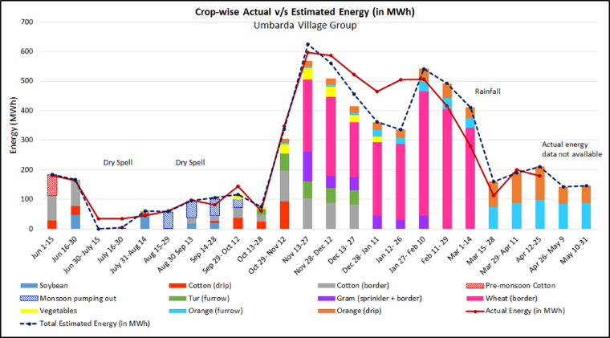

Demand modelling of power demand for irrigation
This work develops a demand model for power consumption for irrigation based on cropping and irrigation practices. The model is based on a published methodology linking energy and water usage to crops. The model was tested against 7 feeders. Figure 1 illustrates the fortnightly model output and the energy consumption data for one feeder, along with the cropwise split.
The model was built into a software module called 'Energy Estimation tool' to estimate the minimum Distribution Transformer (DT) capacity required in a village. The tool was implemented in 10 villages through the official processes of the Department of Agriculture.
The tool is a decision support system, allowing institutional resource governance. It develops protocols to build an important dataset including agroclimatic conditions, technical information, and farmer irrigation practices.
